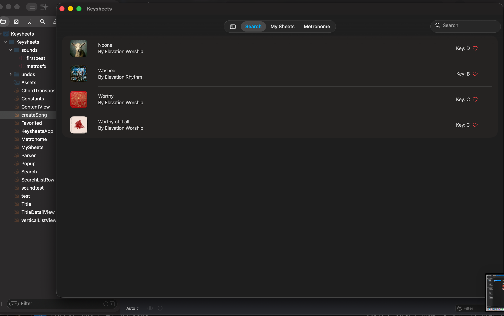
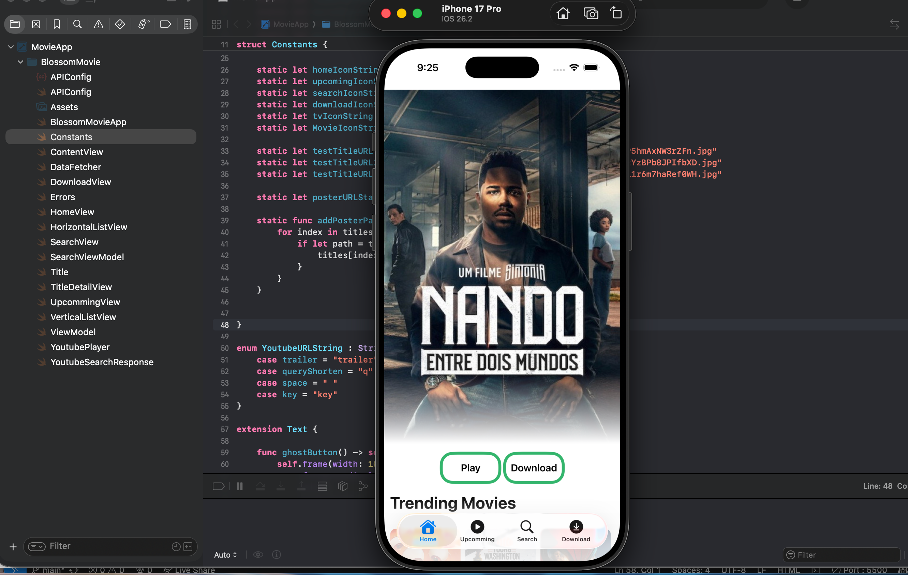
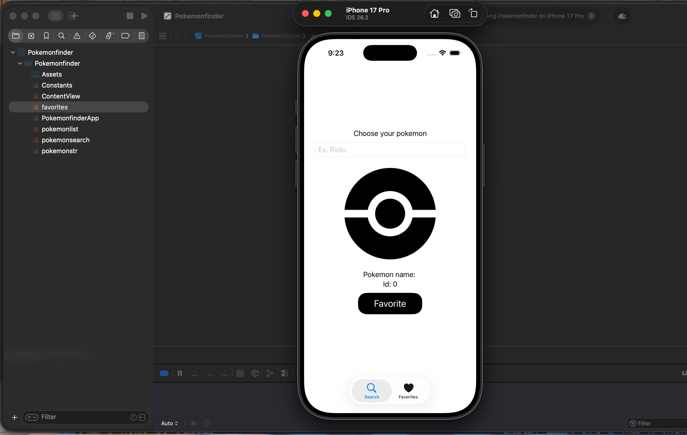

This project was a milestone to me coding wise. Within this project I used multiple classes in order to keep user data reusable. This project includes the ability to create songs, save songs, search throughout your library and transpose the songs key. I learned alot about organization and looping through text in order to find what text to change and keep. My future plans for this app are to keep it more user sided and to add more features such as a number system to go along side the chord system.

This project was one of my first deep dives into swiftData and private apis. Following a tutorial I was able to create an app that lets the user look through the TMDB database of movies and download it. This app also taught me about error handling using enums easily catch errors within every block of code which helps it become a habbit for future projects.

This project was a fun and simple app I create to play around with apis and try to understand its JSON formatting more thoroughly. Within this app, you're able to write down a pokemons name which in the backend makes the text lowercase then displays properties such as its image and id. It also gives you the option to save it to collect a list of your favorite pokemon.
Before starting any sort of front-end development, my main focus during quarantine was Roblox. Within this game I used properties such as event listeners to create a linear horror game along with puzzles and a monster which is unfortunately now broken. Creating this project also allowed me to play around with UI's and properties which was a stepping stone when designing future app and web UI's.
One of my first ever introductions to coding was also in Roblox. I started by creating 3d models of NYC subway trains and as I got better, started working on UI's and functioning systems for them. Beyond this, I created working signal systems which was one of my final projects in Roblox before moving on to high school and web development.